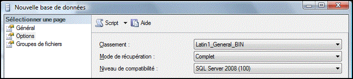
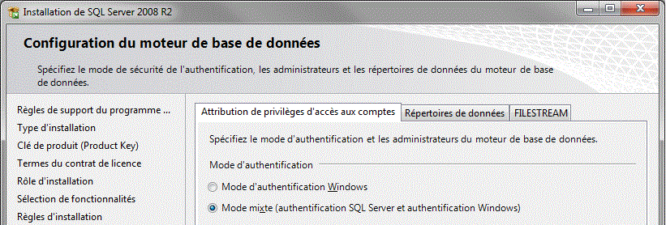
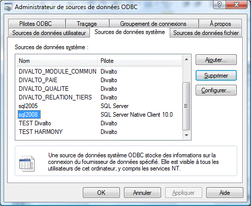
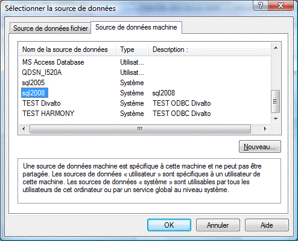
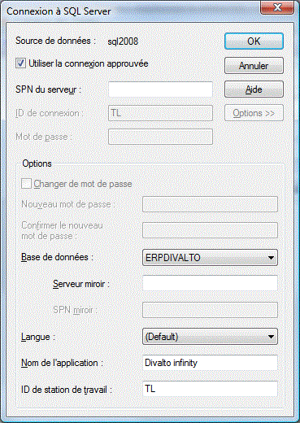

Version minimale de SQL Server
L’ERP Divalto infinity version 7 nécessite impérativement un serveur de bases de données Microsoft SQL Server 2008 R2. Celui-ci doit être installé et opérationnel avant l’installation de l’ERP.
Création des bases de données
Attention :
Le nom de la base de données, sensible à la casse, doit impérativement être en majuscule.
Le paramètre "Classement" de l’onglet "Options" doit impérativement être positionné à Latin1_General_bin lors de la création de la base :

Divalto BI
Pour l’utilisation de Divalto BI, il est impératif d’installer le serveur avec l’option "Authentification mixte". L’option par défaut proposée est Windows. Attention, il est préférable d’activer l’option lors de l’installation de SQL Server. (Elle peut toutefois être modifiée ultérieurement ou sur un serveur déjà installé sans cette option) :

Driver et chaîne de connexion ODBC
Le service Xlan accède à la base de données Microsoft SQL Server 2008 par le driver ODBC 32bits SQL Server Native Client 10.0 :

La chaîne de connexion ODBC à fournir au connecteur SQL sera par exemple la suivante :
DSN=sql2008;Description=sql2008;Trusted_Connection=Yes;APP=Divaltoinfinity;WSID=TL; DATABASE=ERPDIVALTO;


Ports TCP utilisés par SQL Server
Dans une installation simple, seul le port 1433 est utilisé.
Pour plus de détails, reportez-vous à la documentation Microsoft (http://msdn.microsoft.com/fr-fr/library/cc646023.aspx).
En cas d'installation de plusieurs instances de SQL Server
Lors de l'installation de l'ERP, il faut alors renseigner le paramètre "Nom de l’instance" pendant la phase de paramétrage du connecteur SQL.
Attention : Avec la version SQL Express, il faut impérativement renseigner ce nom d’instance (SQLEXPRESS par défaut).